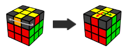
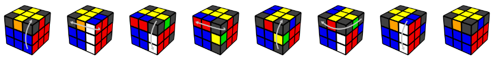

Match Cross Colors

Turn the top face until 2 cross pieces match the side color (if all 4 match, you have finished this step!)

Hold the 2 matching edges at the back/right. If they are across from each other, hold them in any way.

Then do the following moves:

How to memorize this algorithm:
- The first 3 moves of the 4-move sequence.
- Look at the pair of pieces from the bottom.
- Watch how they move away, and then back into the bottom.
Turn the top to match all 4 colors. If you can only match 2 colors, then repeat this step.